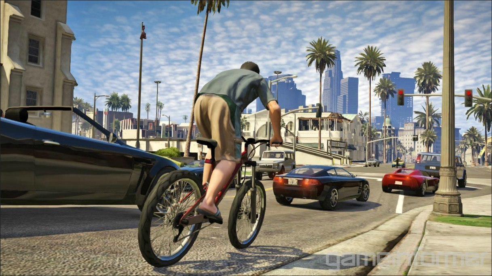
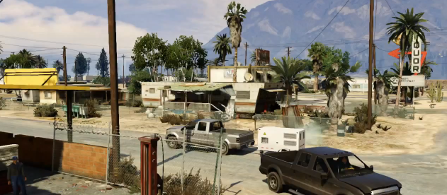
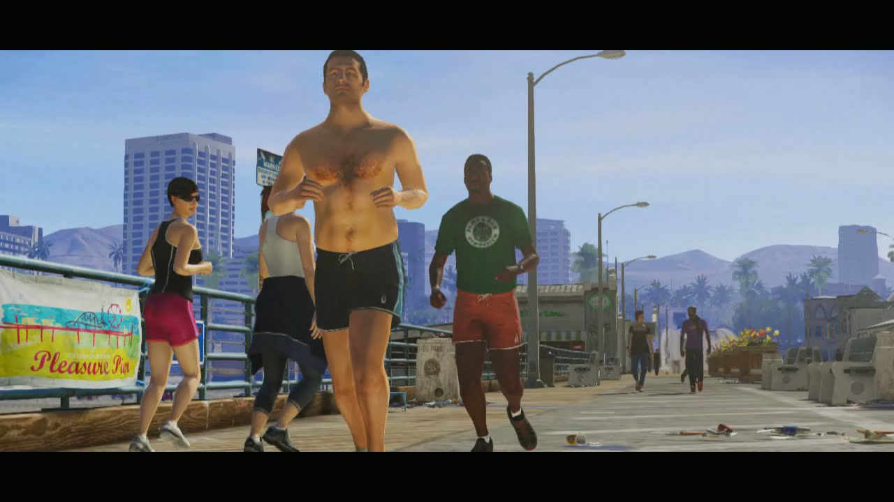
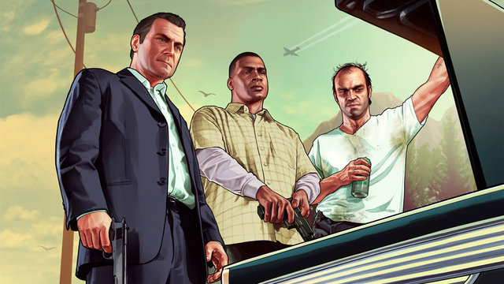
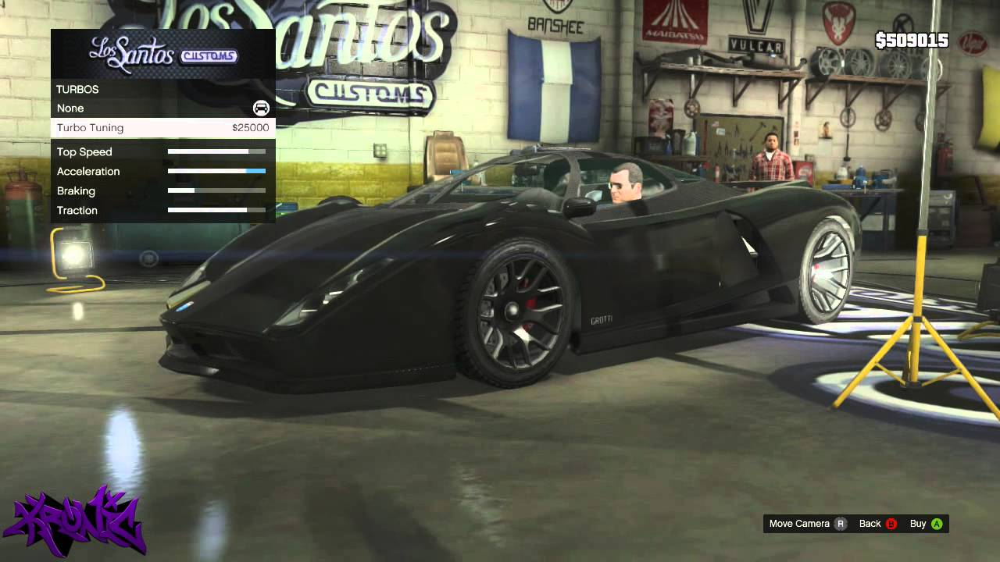
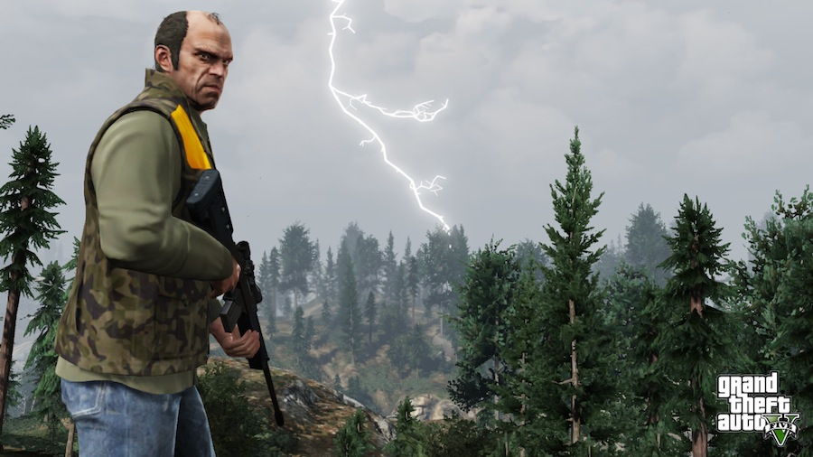
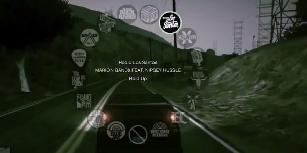

Apanhado Geral(){
Games
Por: Raphael Cardoso Fernandes
Começando pelo cénario: a Rockstar manteve a tradição de San Andreas com a cidade de Los Santos, mas dessa vez, meu amigo, a coisa ficou séria. Ruas, edíficios, arranha-céus, casas, estradas e rodovias, o modo como a Rockstar tratou o cenário foi fenomenal e muito caprichoso, você pode entrar em um bairro mais luxuoso e perceber como as casas foram remodeladas, encontrar pedestres mais bem vestidos e carros de alto padrão financeiro. Dê uma pequena volta em zonas mais modestas e você encontrará veículos mais antigos, animais cruzando as ruas (isso realmente ficou bom) e pedestres mais pobres.
Perceba a diferença:


People are awesome!
Os protagonistas podem ser, a qualquer momento do jogo, personalizados. Cabelo, tatuagens e as roupas. Na minha opinião, faltou capricho nessa parte, em GTA San Andreas, você podia levar CJ à academia seja para malhar ou aprender estilos de luta, haviam mais opções de roupas, cortes de cabelo e tatuagens, mas acredito que essa parte não seja tão crítica, já que, você passará bom tempo do jogo sempre descobrindo e fazendo coisas novas. Os pedestres ficaram excelentes, grande variedade de roupas, penteados, ações diferentes, mini-missões a qual você devê ajudá-los de alguma forma.

Três é demais
Michael, Trevor e Franklin, três personagens, três vidas diferentes mas com destinos entrelaçados. Conforme você avança no jogo, passará a entender a vida deles, seus hábitos, habilidades e passado, você ficará envolvido com a vida pessoal deles e como eles tomam suas ações no dia a dia. Durante as missões, o novo modelo de checkpoint foi melhorado exponencialmente, o que antes por um leve erro o fazia voltar para o início da missão, em GTA V não existe mais isso. Além disso, enquanto você chega a seu ponto de destino de missão, você irá perceber como foi enriquecido a fala dos personagens, o jeito como andam, a maneira como eles se tratam e como conversam entre si antes, durante e após a missão.

Mais inteligente
Em GTA V, a variedade de veículos é impressionante, a empresa criou versões genéricas de carros famosos que são muito próximas a realidade, dessa vez, eles arranham, sujam se passar na terra, amassam, quebram a direção e até mesmo partes faltando. Você se sentirá no bom e velho, Need For Speed Underground, sim é isso mesmo, a quantidade de itens que você pode alterar no seu veículo é impressionante. Se tu fores daqueles que adora imaginar e pensar em como as coisas foram tomam movimento, ficará de boca aberta ao fazer isso com o jogo, a simulação de direção, controle do carro, avião, helicóptero, o peso dos mesmos, o modo como as coisas caem, explodem, quebram ou até mesmo a sua interação com o mundo do jogo ficaram extraordinariamente reais.

Ventos sazonais
Efeitos de iluminação surreais, seja da cidade ou da própria natureza, chuva com direito a poças e mudanças no controle da direção, sol, neblina e um sistema que torna o dia em noite, totalmente fantástico.

Para todas as tribos
As rádios manteram seu padrão de qualidade, vários estilos musicais e muitas rádios diferentes, só que agora com noticiários, algumas sátiras e programas de auditório. Durante as sátiras, você irá perceber que o radialista fará menção a alguns jogos existentes, personalidades e até mesmo marcas famosas como Apple e Facebook.

Conclusão (pessoal)
GTA chegou com tudo. Com detalhes caprichados em cada pedaço do jogo ele foi coroado com o melhor jogo de 2013 pela VGX, enredo de muita qualidade, jogabilidade nos trinques, diversão mais do que dobrada, gráficos impressionantes e uma variedade imensa de automóveis e armas, a Rockstar mostra do que é capaz e leva o glamour. Mas nem tudo são flores, o game também possui pontos fracos, só que, com tamanha genialidade dos produtores e criadores, esses pequenos detalhes não interferem em NADA no quesito diversão. Se você nunca jogou essa belezinha, então não perca tempo, vá até a casa de um amigo ou caso você tenha algum dos consoles (Xbox 360 ou PlayStation 3) compre agora mesmo seu CD e seja feliz!
Referências:
}